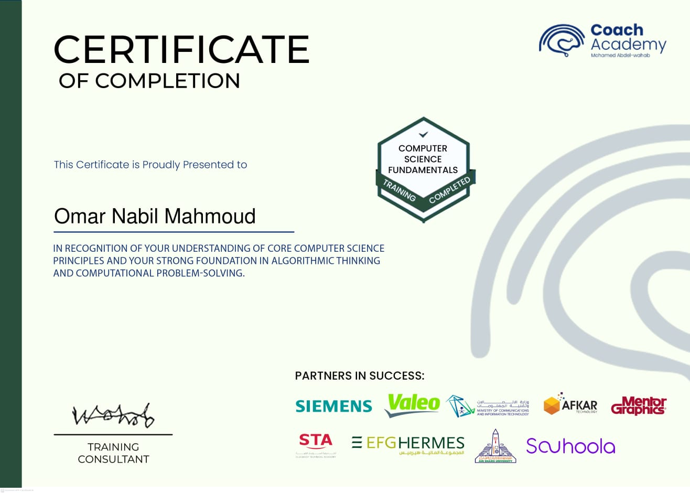
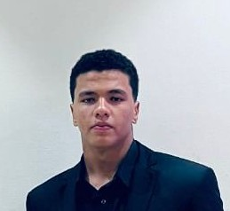
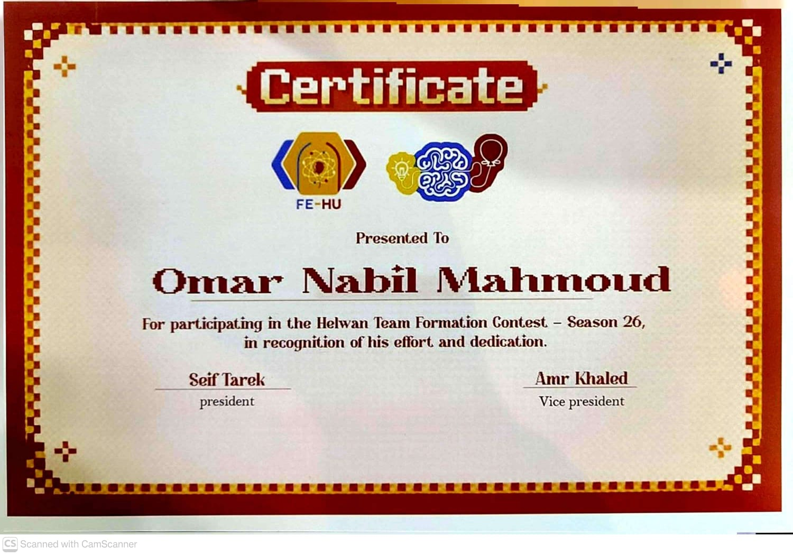
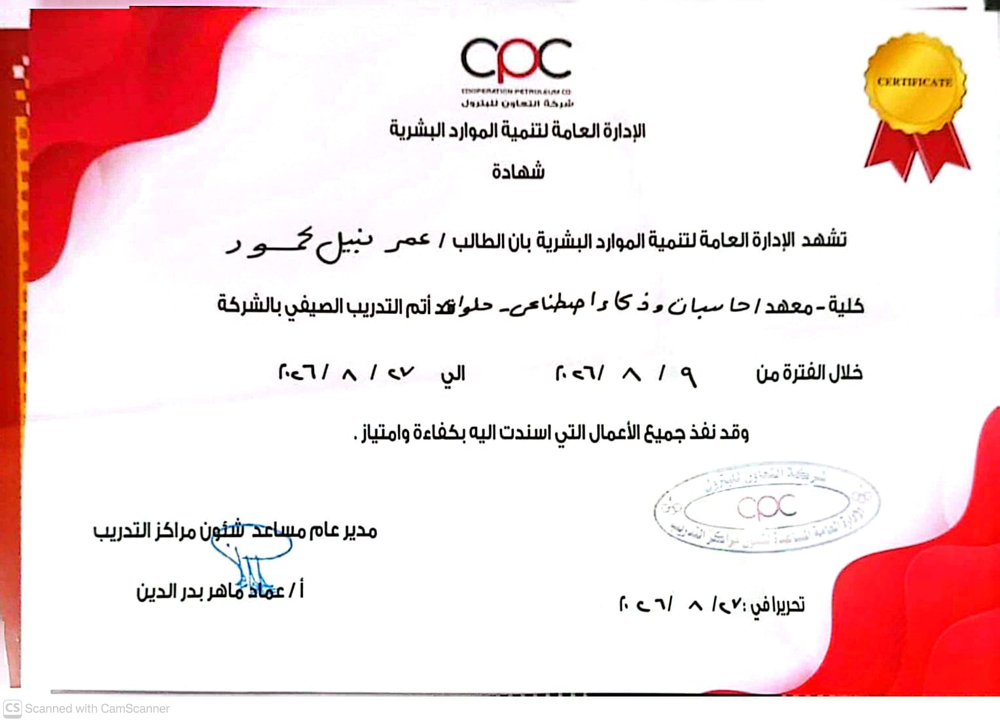

Computer Science Fundamentals
Coach Academy · MCIT · Siemens · Valeo · EFG Hermes
Core computer science principles, algorithmic thinking, and computational problem-solving.
I am Omar Nabil Mahmoud, a 3rd-year Software Engineering student at Helwan University driven by an intense passion for building resilient software systems. Approaching engineering with the mindset of a future tech founder, my long-term goal is to build my own technology venture and agency. Right now, my absolute priority is gaining deep, hands-on engineering experience, solving challenging technical problems, and mastering the architecture behind high-impact products.

A technical foundation sharpened by real conversations, real constraints, and real commercial stakes.
My technical core is computer science: algorithmic efficiency, data structures, space and time complexity, and the discipline to understand how systems behave under pressure.
Before and alongside engineering, I worked in call centers and real estate sales. That experience taught me to listen actively, uncover the real objective, calculate ROI, and negotiate when the stakes are high. I bring that maturity into every technical decision.
A small set of projects where algorithms, structure, and defensive thinking meet.
Benchmark simulator comparing Shortest Remaining Time First and Priority Scheduling, tracking waiting and turnaround times in preemptive scenarios.
Graph traversal and backtracking implementation for dynamic grids, edge cases, and efficient path discovery.
Object-oriented platform for student records, academic tracking, modular CRUD operations, and input validation.
Banking transaction simulation with invariant assertions, account management, and defensive error trapping.
Credentials that connect theory, competition, and institutional experience.

Core computer science principles, algorithmic thinking, and computational problem-solving.

Competitive programming, optimization under strict limits, and team collaboration.

Practical institutional workflow training completed with distinction.
For internships, junior engineering opportunities, or a thoughtful conversation about software, reach out.